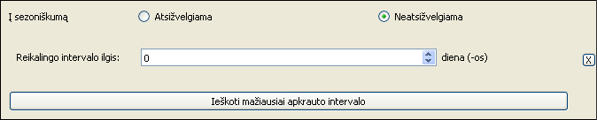
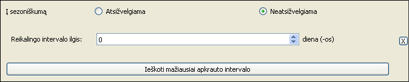
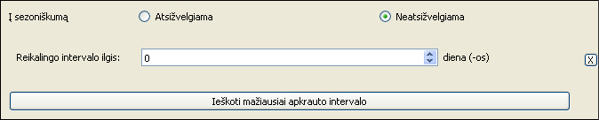

Mažiausios apkrovos intervalo paieškos sąsaja

ASISTENTAS RODO TIK TUOS FAILUS, KURIU SIZE YRA DIDESNIS ARBA LYGUS 511 BYTES (cia bug)
ASISTENTAS RODO TIK TUOS FAILUS, KURIU SIZE YRA DIDESNIS ARBA LYGUS 511 BYTES (cia bug)
 
